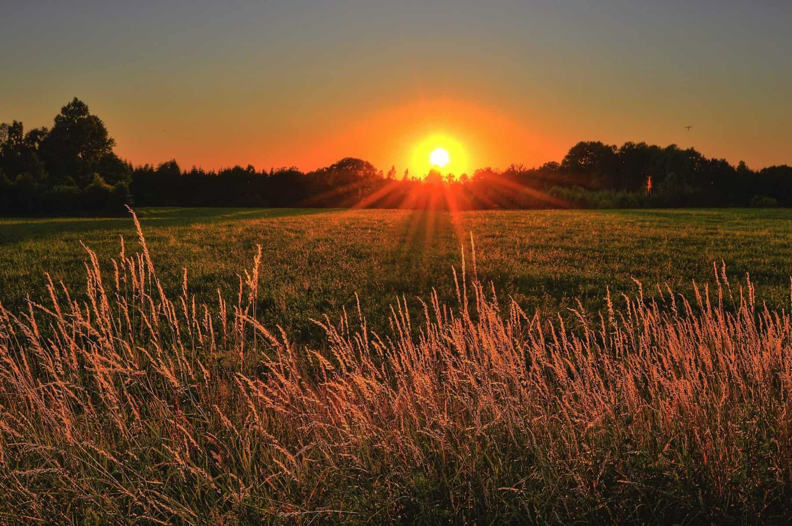

Магията на Светлината

Златният час
Това е времето малко след изгрев или преди залез слънце. Светлината е мека, топла и хвърля дълги сенки, които придават обем на снимките.
Мека срещу Твърда светлина
Твърдата светлина (директно слънце) създава силни контрасти. Меката светлина (облачен ден или през софтбокс) е по-ласкателна за портрети, защото прикрива несъвършенствата.